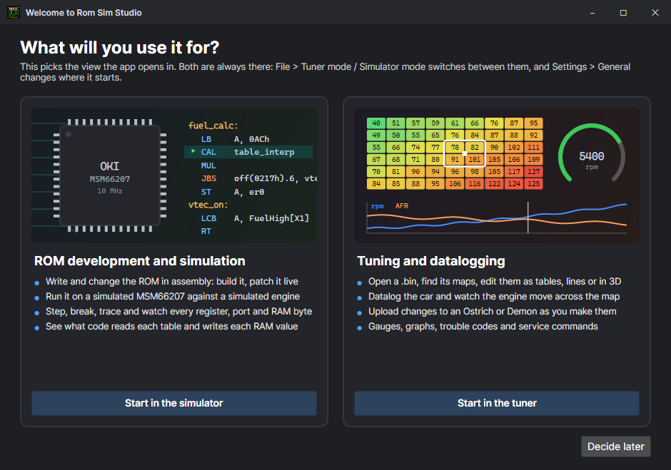

Getting started
Install the program, tell it what you will use it for, and open your first ROM.
What you need
| For | You need |
|---|---|
| The program | Windows 10 or 11, Linux or macOS. Two CPU cores and 2 GB of RAM is enough: turn on Low performance mode (Settings > General) on an old laptop. If it asks for the .NET 10 runtime, install it from Microsoft. |
| Simulating ROMs | Nothing else: the ECU and the engine are simulated. |
| Datalogging a car | A datalog cable on the ECU's CN2 header (a USB serial adapter), and a ROM that streams a datalog (HTS, a skeleton ROM with a datalogging module, and most tuned ROMs do; a stock ROM does not). |
| Changing the tune live | A ROM emulator: a Moates Ostrich 2.0 or Demon, in the ECU's chip socket. |
| Putting a ROM in the car | A 27C256 / 29C256 (or a 27C512 / SST27SF512 with the Bin tool) and a chip programmer — or the emulator. |
Install
- Download romsimstudio.zip from the website and unzip it anywhere you can write to (not Program Files: the program keeps its templates and updates beside itself).
- Run RomSimStudio.
- Later versions arrive through Settings > Updates: it lists what differs from the website, checks each file's SHA-256, and downloads nothing until you ask.
Only tuning a car? romsimtuner.zip is RomSimTuner: the calibration editor, datalogging and the ROM emulator on their own, without the simulator, the MCP server or plugins. It needs only the .NET 10 runtime, keeps its own settings (the first time, it takes Rom Sim Studio's) and has its own Settings > Updates. Everything in Tuning, Calibration, Datalogging and the emulator works the same in it. See RomSimTuner.
The first start

- ROM development and simulation opens the workbench: the source, the simulated chip and engine, the debugger.
- Tuning and datalogging opens Tuner mode: the maps and settings fill the window, with the datalog beside them.
Both are always there: File > Tuner mode / Simulator mode (Ctrl+T) switches at any time, and Settings > General changes where it starts and can bring the question back. See Simulator and Tuner modes.
Open a ROM
File > Open (Ctrl+O) takes three kinds of file:
| File | What happens |
|---|---|
| .asm | Assembly source. It is built (Ctrl+B), loaded into the simulator, and its ;@ annotations name its maps and settings. |
| .bin / .rom | A ROM image. It is disassembled into source you can read and step through, and Detect finds its maps by reading the code (see Definitions and Detect). |
| .zip | A project saved earlier: every source, the machine state, the definitions, the datalog and the views, as they were. See Projects. |
Or start a new one with File > New ROM: copy a finished template (HTS120, HTS115 and others), or create a ROM from the skeleton with only the functions you want.
The Templates folder
Beside the program, Templates holds what File > New ROM offers: finished ROMs (*.asm), the skeletons (p30-skeleton.asm, p13-skeleton.asm) with their modules, labelled reference ROMs (References) used to recognise an unknown ROM's tables, and the set-up wizard's presets (Presets: stock ECU maps, injectors, gearboxes). A .asm you drop in there is offered too. New ROM > Open templates folder opens it.
Next
- Writing or changing ROMs: the workbench, then running and stepping.
- Building a ROM with the functions you want: creating a custom ROM.
- Tuning a car: tables and settings, then datalogging.